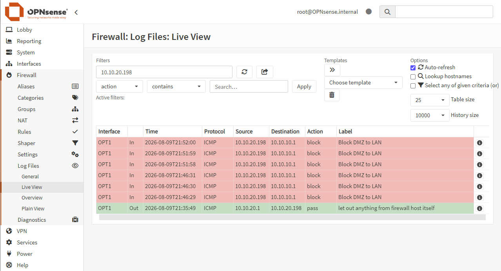
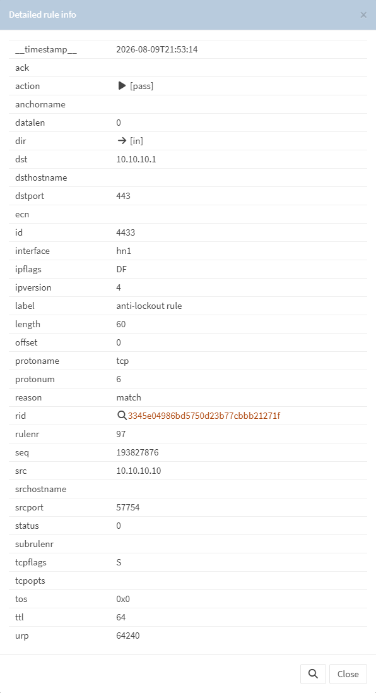

Segmentation
Inter-zone firewall policy limits trust between LAN, DMZ, and SOC/Test networks.
Firewall Lab / Portfolio Case Study
OPNsense · Hyper-V · WireGuard
A local-only homelab demonstrating firewall administration, isolated network zones, least-privilege traffic policy, outbound connectivity, encrypted remote access, and evidence-led troubleshooting.
Architecture
OPNsense-FW01 routes and filters traffic between a DHCP-based WAN connection and four dedicated lab networks. Management remains on the trusted LAN and is not exposed publicly.
| Zone | Interface | Network | Purpose |
|---|---|---|---|
| WAN | hn0 | DHCP | Outbound lab connectivity |
| LAN | hn1 | 10.10.10.0/24 | Trusted clients and management |
| DMZ | hn2 / OPT1 | 10.10.20.0/24 | Isolated service testing |
| SOC/Test | hn3 / OPT2 | 10.10.30.0/24 | Monitoring and controlled testing |
| VPN | wg0 | 10.10.40.0/24 | Encrypted remote access |
Security controls
Inter-zone firewall policy limits trust between LAN, DMZ, and SOC/Test networks.
DHCP, DNS forwarding, NAT, and outbound access were configured and validated within the lab.
WG-Remote-Access uses UDP/51820 and the 10.10.40.0/24 tunnel network. A recent handshake, bidirectional encrypted traffic, and tunnel-side ICMP were validated without recording keys.
Administrative access remains on a trusted path; the management interface is not public-facing.
Validated evidence


tcpdump confirmed blocked ICMP arriving on hn2, WireGuard UDP/51820 on hn0, and inner 10.10.40.2-to-10.10.40.1 ICMP on wg0. The VPN ping returned 3/3 replies.
Open the sanitized, full-resolution captures for the lab architecture, firewall policy, network services, outbound connectivity, and VPN runtime.
Outcome
The finished environment demonstrates network segmentation, firewall-rule validation, essential network services, VPN operation, logging, packet capture, and a structured troubleshooting workflow in an isolated Hyper-V environment.
Limitation: This case study validates an isolated homelab policy, not a production deployment.